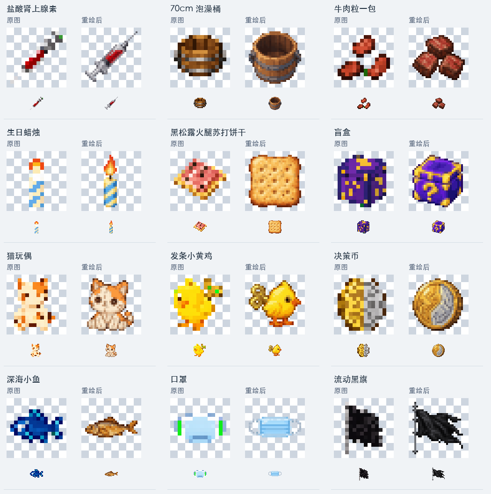
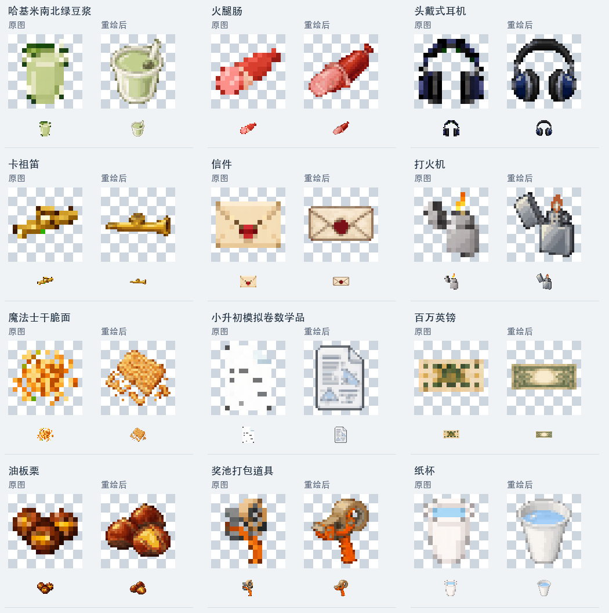
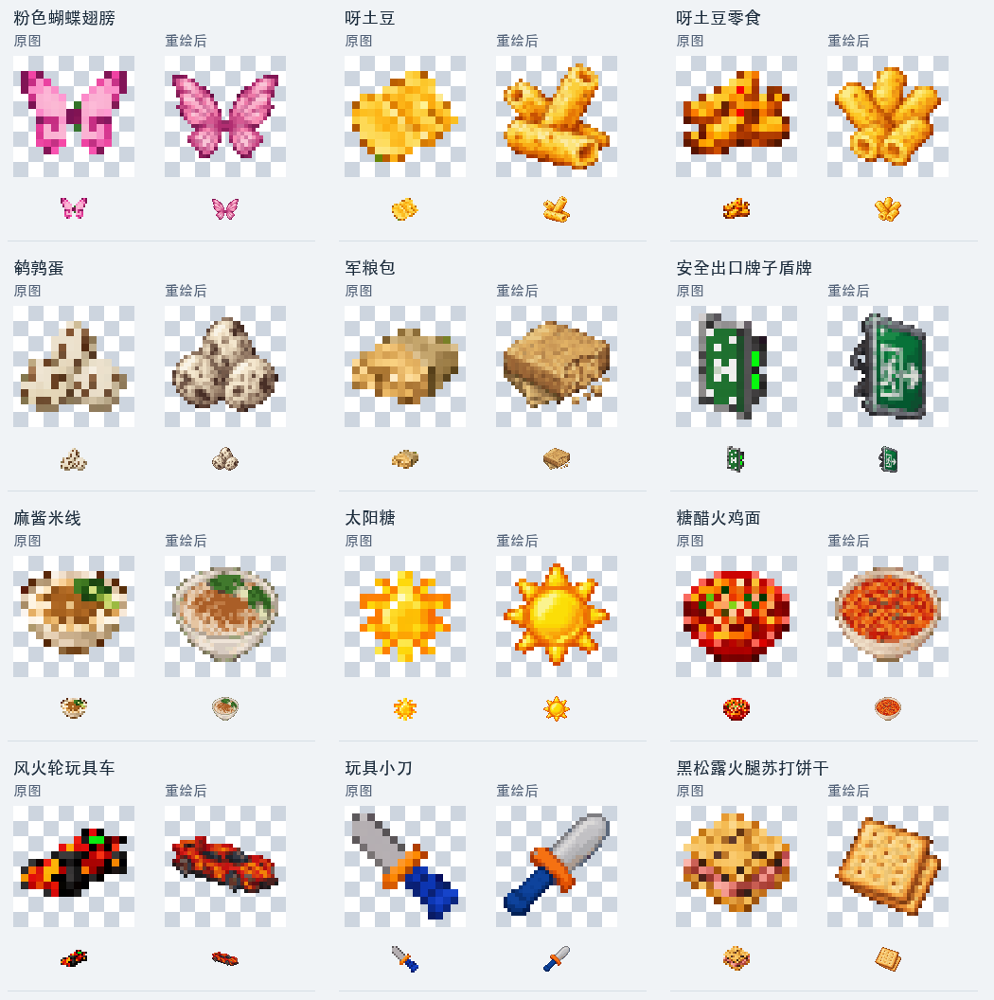
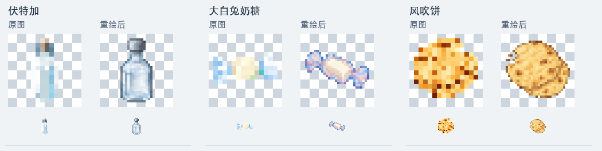
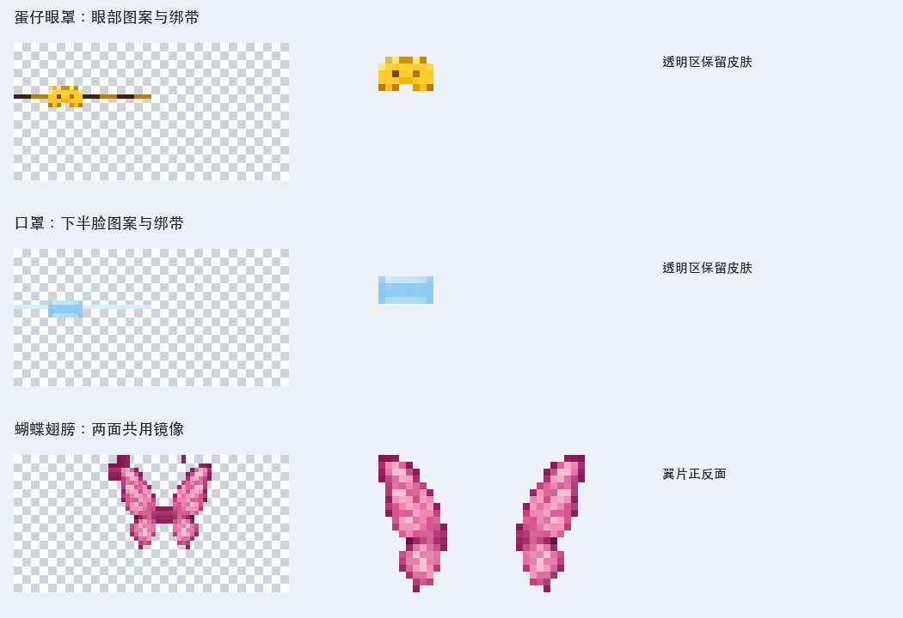
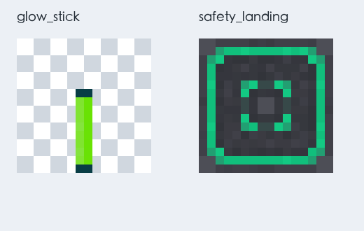
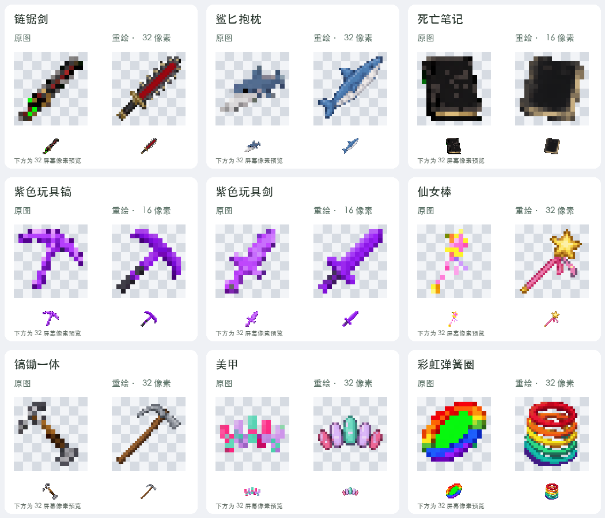
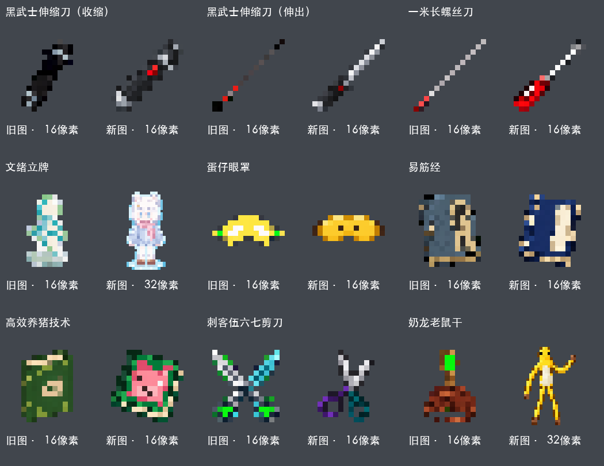

67 件名称已对齐原计划
57 张三批物品贴图重绘；徽章等照片
9 组既有人工模型保留
本轮进展：追加 39 张物品图标、2 张方块材质和 3 张穿戴材质，累计重绘 57 张物品图。王立新徽章按用户要求等待大头照，交通锥等九组人工模型配套资源保留。141 项工具测试、189 项资源检查、构建、真实客户端加载和同包专服保存重启通过。尚未完成游戏内画面验收，远程发布继续暂停。
下载本地候选包 · 校验文件 · 验证结果
第三批材质与穿戴修正
其余可依据原计划确定的 39 张图标统一整理为 32 像素；下图每项左侧为原图、右侧为重绘图，下方为 32 屏幕像素预览。深海小鱼改为熟制零食，两项黑松露饼干以单块与叠放区分，两项呀土豆统一为中空膨化条，糖醋火鸡面不再凭口味名称额外画火鸡肉片。




图标与两张方块图使用内置图像生成工具逐项绘制，再机械裁切、缩放、量化并保存透明通道；穿戴材质从已绘制图案裁切并按人物模型排版。完整生成提示、来源哈希与尺寸记录。
穿戴与放置显示
蛋仔眼罩和口罩不再套用通用盔甲外观，分别使用眼部和下半脸材质。粉色蝴蝶翅膀补上实际玩家渲染层，使用固定粉色翼片图案；普通和纤细人物都已验证注册，原版鞘翅保持独立。荧光棒改为透明背景细杆，并为立放、墙挂模型启用透明裁切；安全落点使用清晰的青绿色定位标记。


以上为正式材质和排版预览。真实客户端已检查资源存在、渲染层注册与原版鞘翅互斥；不等同于游戏内实际穿戴画面已由人工验收。
第二批 9 张贴图
本批重做链锯剑、鲨匕抱枕、死亡笔记、紫色玩具镐和剑、仙女棒、镐锄一体、美甲、彩虹弹簧圈。死亡笔记与紫色双形态采用 16 像素，其余六张采用 32 像素，保留锯齿、鳍、甲片间隙和弹簧中空结构。链锯剑经过一次简化重绘，减少小尺寸下难以辨认的细节。

使用内置图像生成工具，依据物品文字需求绘制；彩虹弹簧造型依据用户文字确认。后处理仅裁切、缩放和颜色及透明通道量化。生成提示、来源哈希与逐项尺寸 · 本地验证原始记录。贴图预览已经检查；游戏内手持画面仍待验收。
首批 9 张贴图
两态伸缩刀、螺丝刀、眼罩、易筋经、养猪书和剪刀采用 16 像素；文绪立牌与奶龙玩偶采用 32 像素，保留人物特征和完整四肢。后两项依据用户本轮提供的图片重新绘制，参考图片本身不进入发行包。已有九组立体模型及其贴图保持不变。

图中为正式图标放大显示，可点击查看。贴图来源与验证 · 生成记录。完整母稿保留在本地验证目录。
已落地的修正
| 范围 | 修正后的行为 | 状态 |
|---|
| 物品名称 | 67 件物品恢复原计划名称，方块、实体、菜单和提示同步。注册标识沿用原值。 | 代码已修正 |
| 中文乱码 | 修正模组名称、作者、说明，并让打包步骤按正确编码读取显示文案。成品编码已核对。 | 代码已修正 |
| 打包选择 | 左键选整组或取消，右键减少一个；只提交选中数量。选择期间背包物品留在原位。 | 代码已修正 |
| 失败后重试 | 打包和死亡笔记提交后结束该菜单；业务失败可重新打开，取得新会话。 | 代码已修正 |
| 完整信件 | 长信支持翻页按钮、滚轮和键盘；缩放编辑窗口时保留草稿，清除旧输入控件。 | 代码已修正 |
| 穿戴与荧光棒显示 | 眼罩、口罩采用独立头部贴图；蝴蝶翅膀增加实际玩家渲染层；荧光棒修正透明细杆及立放、墙挂模型。 | 代码与资源检查通过 |
| 蛋仔眼罩 | 牛奶、图腾清除效果后仍维持眼罩失明；外部失明到期后补回，卸装保留外部效果。 | 代码已修正 |
| 玩具镐／剑 | 剑形态沿用木剑的蜘蛛网掉落和挖掘速度，镐形态保留木镐规则。 | 代码已修正 |
| 易筋经 | 地面首跳不再误消耗额外跳；生命、攻击、二段跳速度由服务端配置。 | 代码已修正 |
| 高效养猪 | 只处理可繁殖且年龄为零的猪，排除幼猪及繁殖冷却中的猪。 | 代码已修正 |
| 伤害和概率 | 伸缩刀收缩概率与两种抱枕投掷伤害可配置，默认值保持原计划。 | 代码已修正 |
| 八音盒地址 | 保留地址中的转义字符与签名；重复保存不改变地址。输入界面复用完整校验。 | 代码已修正 |
| 八音盒播放 | 向当前在线玩家播放时不按方块距离衰减；方块位置仍保留为事件来源。 | 代码已修正 |
| 音频占用 | 最多两条音频，取消、停止、重载和断线后回收占用；活跃声音不会提前释放。 | 代码已修正 |
| 液体状态 | 泡澡桶、纸杯的悬停提示区分空、水与岩浆。 | 代码已修正 |
| 任意门区块边缘 | 检查安全点前确认邻区块已加载；暂时无法确认时保持原地并保留配对。拆安全点不主动读取未知邻区块，区块正常加载后原有配对可继续使用。 | 实测通过 |
| 抱枕显示 | 将已规划的背包和第一人称缩放实际写入正式模型，保留九组人工模型。 | 代码已修正 |
服务器可调数值
配置位于世界的服务器配置文件。数值由服务器决定，修改易筋经属性后应让已学习玩家重新登录以重建属性。
| 数值 | 默认值 | 允许范围 |
|---|
| 易筋经最大生命增加 | 2 点（1 颗心） | 0—40 点 |
| 易筋经攻击增加 | 1 点 | 0—20 点 |
| 二段跳向上初速度 | 0.42 | 0.1—1.5 |
| 伸缩刀命中后收缩概率 | 20% | 0—100% |
| 石墩子抱枕投掷伤害 | 3 点 | 0—40 点 |
| 钻石抱枕投掷伤害 | 5 点 | 0—40 点 |
验证进度
| 检查 | 结果与对应候选 |
|---|
| 工具与资源 | 第三批接入后，141 项工具测试、189 项资源一致性检查与打包通过。99 个模型及动画文件中仅 2 项荧光棒模型增加透明裁切，九组人工模型保留；下载包不含测试探针。 |
| 本轮客户端加载 | 当前下载包在真实客户端完成图集构建、主菜单稳定加载、三项穿戴资源检查，以及两种人物渲染层和原版鞘翅互斥检查；正常退出，未见缺失贴图报错。尚未人工验收游戏内手持、穿戴和放置画面。 |
| 本轮纯正式包专服 | 当前下载包完成两次干净启动与正常停止，67 项注册及奖池保存重启保留，无客户端类加载崩溃。本次增加穿戴显示代码，已重新验证纯专服；其余玩法类逐字节保留。 |
| 上一轮任意门 | 生产配对、进入门体、反向回跳防护、缺失或多余安全点、碰撞与液体出口拒绝通过。新增边缘区块场景确认：未知邻域不强加载、不误删原配对；正常加载后无需重新配对即可传送。此项由 7d5ed4 候选真实专服执行，未随贴图重绘重复；完整双客户端跨维强杀恢复仍待验收。 |
| 上一轮双客户端音频 | 两个真实客户端通过生产界面配置和播放 OGG、MP3，声音引擎实际读到解码数据；独立测试域名映射改为回环后仍命中缓存。坏音频失败后保持在线，Bob 重连后不补播旧事件。7d5ed4 候选的客户端及专服退出码均为 0；本批未重跑音频场景。尚未进行人工听感及 64 MiB 压力验收。 |
| 上一批物品与打包 | 以 189d8f 开头的候选包通过主菜单、67 项创造栏、退出后背包恢复、眼罩跨刻维护，以及打包失败零变更、重开新会话、只扣选定数量等检查。任意门修正后的生产代码由本批完整保留；未重复整个上批矩阵。 |
| 此前能力与文本界面 | 以 fa4bf7 开头的旧贴图候选通过真实首跳、二段跳、远端同步，以及禁止飞行时落地后持续在线 120 刻；长信翻页、缩放保稿、死亡笔记提交与到期死亡也通过。后续混合场景二段跳复验未完成，此条不作为本轮完整客户端复验通过。 |
失败记录与测试修正
第六轮三个独立启动中，前两次首连成功，Bob 在登录阶段持续等待约 30 秒后超时。新增只读诊断确认协议、读取开关和监听器均已正确设置，但现有日志仍无法区分实际发送与接收链路原因。第八轮两个客户端首连及一次重连成功，不据此宣布偶发问题消失。
第七轮门测试布置使用的原版邻块形状更新加载了邻区块，干扰“不强加载”断言。确认原版调用顺序后，只关闭测试布置中的形状更新，真实拆除回调继续运行；第八轮边界断言通过。较早的创造栏关闭、测试方法映射、首跳夹具与失败轮次全部保留，测试问题和生产修复分开记录。
仍须完成
人物徽章与画面：三批共 57 张物品贴图已替换，常规图标已完成。王立新是具体人物，用户准备提供大头照，徽章暂保留旧图；交通锥等人工模型资源保留。手持、穿戴、投掷和放置表现仍需游戏内视觉复核。
联机稳定性：首次登录偶发超时在本轮再次复现，根因仍待查；诊断和失败证据已经保留。
未完成的运行验收：八音盒双客户端基础流程已通过；人工听感、64 MiB 压力及任意门完整双客户端跨维强杀恢复仍未在本轮候选上验收。
长期存档容量：盲盒历史事务仍会持续积累，需要制定保留与归档规则。当前未删除旧记录，未改变恢复证据。
生存获得方式：原计划中仍有未定项，需要确定材料与配方，不能把创造模式可拿到当作生存玩法已经完整。
补齐人物徽章、其余运行流程、异常恢复和画面验收，并定位联机稳定性问题后，才能交付正式可用包。远程构建、推送、标签和发布仍暂停。
查看全部物品名称对照（67 件）
| 原显示名称 | 修正后名称 |
|---|
| 抽象白色小摆件 | 小白人 |
| 活力药剂 | 盐酸肾上腺素 |
| 联结门 | 任意门 |
| 耐用水桶 | 70cm 泡澡桶 |
| 肉粒小食 | 牛肉粒一包 |
| 许愿蜡烛 | 生日蜡烛 |
| 伸缩训练刀 | 黑武士伸缩刀 |
| 香草薄脆 | 黑松露火腿苏打饼干 |
| 惊喜盒 | 盲盒 |
| 双色照明棒 | BML 应援棒 |
| 布偶 | 猫玩偶 |
| 齿刃剑 | 战锤40k 链锯剑 泰拉之牙 |
| 发条小鸡 | 发条小黄鸡 |
| 命运名册 | 死亡笔记 |
| 选择硬币 | 决策币 |
| 海味小食 | 深海小鱼 |
| 晶面坐垫 | 钻石抱枕 |
| 牧场手册 | 高效养猪技术 |
| 蛋壳眼罩 | 蛋仔眼罩 |
| 面罩 | 口罩 |
| 微光棒 | 仙女棒 |
| 风格化地面画板 | 蒙娜奶龙画像 |
| 深色旗帜 | 流动黑旗 |
| 冷光棒 | 荧光棒 |
| 绿豆饮 | 哈基米南北绿豆浆 |
| 肉味肠 | 火腿肠 |
| 头戴耳机 | 头戴式耳机 |
| 小笛 | 卡祖笛 |
| 信纸 | 信件 |
| 点火器 | 打火机 |
| 长柄螺丝刀 | 一米长螺丝刀 |
| 香脆面 | 魔法士干脆面 |
| 练习纸 | 小升初模拟卷数学品 |
| 收藏纸钞 | 百万英镑 |
| 木制八音盒 | 木质手工八音盒 |
| 指甲饰品 | 美甲 |
| 中性纪念奖杯 | 鹿管大赛特等奖奖杯 |
| 烘烤栗子 | 油板栗 |
| 奖池封装器 | 奖池打包道具 |
| 纸杯 | 纸杯 |
| 组合镐锄 | 镐锄一体 |
| 彩色飞翼 | 粉色蝴蝶翅膀 |
| 薄切脆片 | 呀土豆 |
| 脆片零食 | 呀土豆零食 |
| 紫晶玩具镐剑 | 紫色玩具钻石镐 / 剑 |
| 小型禽蛋 | 鹌鹑蛋 |
| 彩色弹环 | 彩虹圈 |
| 守护护符 | 奶龙老鼠干 |
| 补给包 | 军粮包 |
| 返航剪刀 | 刺客伍六七剪刀 |
| 路障头盔 | 路障头饰 |
| 安全标记盾牌 | 安全出口牌子盾牌 |
| 安全基座 | 安全落点 |
| 芝麻米线 | 麻酱米线 |
| 软垫短刃 | 鲨匕抱枕 |
| 石纹坐垫 | 石墩子抱枕 |
| 暖光糖 | 太阳糖 |
| 酸甜面 | 糖醋火鸡面 |
| 玩具小车 | 风火轮玩具车 |
| 练习小刀 | 玩具小刀 |
| 咸香薄脆 | 黑松露火腿苏打饼干 |
| 烈性饮品 | 伏特加 |
| 纪念徽章 | 王立新徽章 |
| 纸质立牌 | 文绪立牌 |
| 牛奶糖 | 大白兔奶糖 |
| 轻酥饼 | 风吹饼 |
| 健体手册 | 易筋经 |